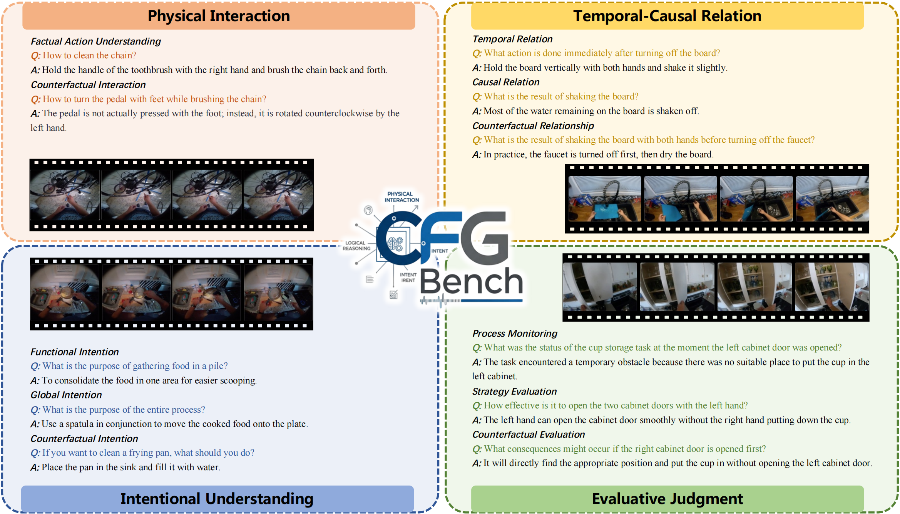
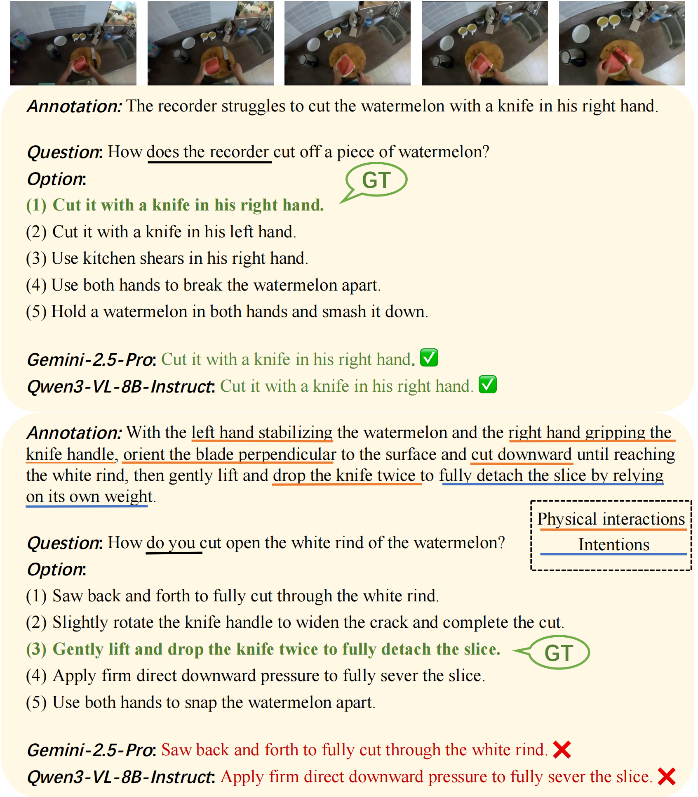

What happened?
动作分类与粗粒度第三人称描述。
FINE-GRAINED BENCH
Cognitively Benchmarking Fine-Grained Action for Embodied Agents
CFG-Bench 不只评估模型能否描述动作，而是检验它能否理解如何做、为何做，以及做得如何。

THE MISSING CAPABILITY
现有具身 Benchmark 多聚焦高层规划、空间推理或第三人称粗粒度描述，但真实物理交互还需要理解接触方式、操作顺序、因果关系、行为意图与执行质量。
如果评测只问“发生了什么”，模型对行动知识的核心缺口就会被平均分数掩盖，也无法判断它是否具备服务机器人学习与执行的认知基础。
动作分类与粗粒度第三人称描述。
物理细节、时序因果、意图与执行评价。
WHAT CFG-BENCH ADDS
评估接触、方向、姿态、操作方式与状态变化等可执行细节。
重建动作顺序、事件依赖和结果形成过程。
从动作与上下文判断行为目标及潜在意图。
判断执行是否正确、有效和完整，并识别改进空间。
REPRESENTATIVE EVIDENCE
